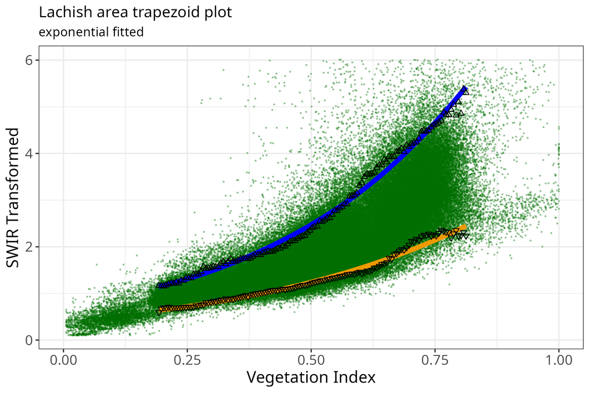

rOPTRAM: Three Trapezoid Fitting Methods
Source:vignettes/rOPTRAM_trapezoid_methods.Rmd
rOPTRAM_trapezoid_methods.RmdIntroduction

The algorithm for finding trapezoid wet and dry edges works as follows:
After acquiring a time series of Sentinel-2 images over the study
area, both vegetation index (i.e. NDVI or SAVI), and SWIR Transformed
Reflectance (STR) rasters are prepared. Pixel values of both indices for
all images are collected into a two column table (and plotted as a
scatterplot). The vegetation axis (x-axis) is split into a large number
of intervals (usually between 50 - 100). The width of each interval is
configurable by the user through the vi_step parameter in
optram_wetdry_coefficients(). Then for each interval the
top and bottom 5% quantiles of STR values are determined. These point
values - VI and STR - are considered to create the fitted wet and dry
trapezoid edges.
Three fitting methods are available in {rOPTRAM} to prepare the trapezoid wet and dry edges. For detailed background, see: Ma, Johansen, and McCabe (2022). Users can choose between a
- linear OLS fitted line
- exponential fit
- second order polynomial
All fitting methods are derived using the lm function in
the R {stats} package.
The linear OLS fit follows: The exponential fit uses the equation: where STR is the fitted STR value, , and are the exponential regression intercept, and coefficient and is the vegetation index value.
The polynomial fit uses:
The fitting method is chosen by setting the
trapezoid_method option using the
optram_options() function.
Examples
remotes::install_github("ropensci/rOPTRAM")
library("rOPTRAM")
library("CDSE")
library("jsonlite")Prepare data.frame of pixel values
from_date <- "2022-05-01"
to_date <- "2023-04-30"
output_dir <- tempdir()
aoi <- sf::st_read(system.file("extdata",
"lachish.gpkg", package = "rOPTRAM"))
optram_options("veg_index", "NDVI")
s2_file_list <- optram_acquire_s2(aoi,
from_date, to_date,
output_dir = output_dir)
STR_list <- list.files(file.path(output_dir, "STR"),
pattern = ".tif$", full.names = TRUE)
VI_list <- list.files(file.path(output_dir, "NDVI"),
pattern = ".tif$", full.names = TRUE)
full_df <- optram_ndvi_str(STR_list, VI_list,
output_dir = output_dir)Show Linear trapezoid plot
meth <- "linear"
optram_options("trapezoid_method", meth)
#> [1] "edge_points = TRUE"
#> [1] "feature_col = ID"
#> [1] "max_cloud = 12"
#> [1] "max_tbl_size = 1e+06"
#> [1] "period = full"
#> [1] "plot_colors = no"
#> [1] "remote = scihub"
#> [1] "rm.hi.str = FALSE"
#> [1] "rm.low.vi = FALSE"
#> [1] "SWIR_band = 11"
#> [1] "trapezoid_method = linear"
#> [1] "veg_index = NDVI"
#> [1] "vi_step = 0.005"
rmse <- optram_wetdry_coefficients(full_df,
output_dir = output_dir)
edges_df <- read.csv(file.path(output_dir, "trapezoid_edges_lin.csv"))
pl <- plot_vi_str_cloud(full_df, edges_df = edges_df,
edge_points = TRUE)
Trapezoid scatterplot
pl <- pl + ggplot2::ggtitle("Lachish area trapezoid plot",
subtitle = paste(meth, "fitted"))
ggplot2::ggsave(file.path(output_dir, paste0("trapezoid_lachish_",
meth, ".png")),
width = 18, height = 12, units = "cm")
Show Exponential fitted trapezoid plot
meth <- "exponential"
optram_options("trapezoid_method", meth)
#> [1] "edge_points = TRUE"
#> [1] "feature_col = ID"
#> [1] "max_cloud = 12"
#> [1] "max_tbl_size = 1e+06"
#> [1] "period = full"
#> [1] "plot_colors = no"
#> [1] "remote = scihub"
#> [1] "rm.hi.str = FALSE"
#> [1] "rm.low.vi = FALSE"
#> [1] "SWIR_band = 11"
#> [1] "trapezoid_method = exponential"
#> [1] "veg_index = NDVI"
#> [1] "vi_step = 0.005"
coeffs <- optram_wetdry_coefficients(full_df,
output_dir = output_dir)
edges_df <- read.csv(file.path(output_dir, "trapezoid_edges_exp.csv"))
pl <- plot_vi_str_cloud(full_df, edges_df = edges_df,
edge_points = TRUE)
Exponential fit trapezoid scatterplot
pl <- pl + ggplot2::ggtitle("Lachish area trapezoid plot",
subtitle = paste(meth, "fitted"))
ggplot2::ggsave(file.path(output_dir, paste0("trapezoid_lachish_",
meth, ".png")),
width = 18, height = 12, units = "cm")
Show Polynomial fitted trapezoid plot
meth <- "polynomial"
optram_options("trapezoid_method", meth)
#> [1] "edge_points = TRUE"
#> [1] "feature_col = ID"
#> [1] "max_cloud = 12"
#> [1] "max_tbl_size = 1e+06"
#> [1] "period = full"
#> [1] "plot_colors = no"
#> [1] "remote = scihub"
#> [1] "rm.hi.str = FALSE"
#> [1] "rm.low.vi = FALSE"
#> [1] "SWIR_band = 11"
#> [1] "trapezoid_method = polynomial"
#> [1] "veg_index = NDVI"
#> [1] "vi_step = 0.005"
coeffs <- optram_wetdry_coefficients(full_df,
output_dir = output_dir)
edges_df <- read.csv(file.path(output_dir, "trapezoid_edges_poly.csv"))
pl <- plot_vi_str_cloud(full_df, edges_df = edges_df,
edge_points = TRUE)
Polynomial fit trapezoid scatterplot
pl <- pl + ggplot2::ggtitle("Lachish area trapezoid plot",
subtitle = paste(meth, "fitted"))
ggplot2::ggsave(file.path(output_dir, paste0("trapezoid_lachish_",
meth, ".png")),
width = 18, height = 12, units = "cm")